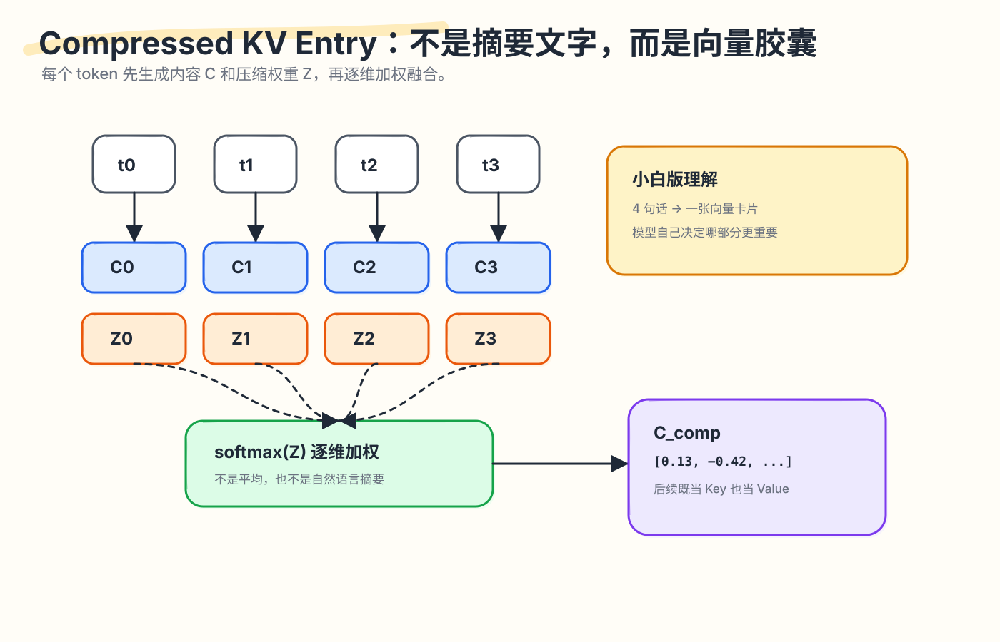
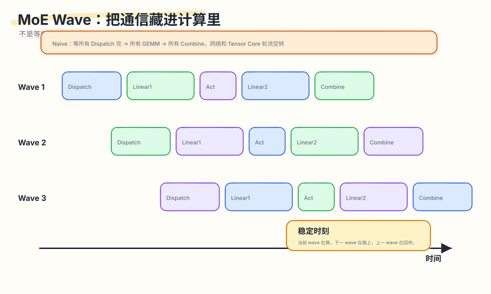

DeepSeek‑V4's Hidden Thread I: 1M Context is not a length, but a memory system.

If an Agent needs to work continuously for 8 hours — reading an entire codebase, dozens of rounds of terminal output, hundreds of tool returns — intelligence rarely hits its ceiling first. Memory becomes expensive before that happens.
That sounds counterintuitive. When we say a model “supports 1M context,” we naturally picture a bigger input box. More room means more documents fit, and the problem seems solved. But the hard part of long context isn’t capacity — it’s marginal cost: every generation step must carry the entire history forward.
For autoregressive models, history enters the context and keeps participating in generation. Every new token the model generates must draw on the prior state. The longer the context, the heavier that state. If an Agent generates thousands or tens of thousands of tokens, this cost shifts from a one-time admission fee to a toll paid at every step.
So the right question for DeepSeek‑V4’s 1M context is not “can it fit one million tokens?” The more important question is:
How are those one million tokens stored, retrieved, and read at each generation step without grinding the system to a halt?
The official technical report is direct about the numbers: the DeepSeek‑V4 series includes V4‑Pro and V4‑Flash, both supporting 1M token context. V4‑Pro has 1.6T total parameters with 49B activated; V4‑Flash has 284B total parameters with 13B activated. DeepSeek’s release page and NVIDIA’s technical blog list the same specs. (DeepSeek API Docs)(NVIDIA Developer)
At 1M context, the report claims V4‑Pro’s per-token inference FLOPs are only 27% of V3.2’s, and its KV cache is only 10%; V4‑Flash drops further to 10% FLOPs and 7% KV cache. These numbers come from DeepSeek’s technical report and Hugging Face’s public analysis — public materials rather than third-party reproductions — but they clearly signal V4’s design priority: making million-token context a genuinely usable system capability for Agent tasks. (DeepSeek-AI)(Hugging Face)
This first article covers only V4’s first hidden thread: memory.
“Memory” here means both the attention mechanism and the execution path. The memory cost of long-context Agents has at least two layers: how history is stored and retrieved, and how MoE communication and computation avoid waiting on each other as each output token passes through the MoE layers. The former explains SWA, CSA, and HCA; the latter explains why MoE wave scheduling belongs in this memory article.
Seven concrete questions to start with:
- Why does standard attention break down at 1M context?
- How does a compressed KV entry differ from a human-written summary?
- Why does CSA compress first, then retrieve, then read closely?
- Why is HCA still needed alongside CSA?
- Why must the recent window preserve raw text?
- MoE wave scheduling is execution-side — why does it belong in the memory discussion?
- What does the hardware formula
C/B <= Vcomp/Vcommactually say?
1. The Problem with Standard Attention: Every Step Gets Heavier as History Grows
Start with a simple analogy.
Suppose you’re fixing a bug. In front of you is a stack of sticky notes. Each note records information about one historical token. Standard attention works like this: every time you write the next sentence, you flip through these notes to find which ones are relevant.
With a few thousand notes, that’s manageable. With a million notes, the problem changes. Storage capacity is just the beginning; the real issue is that finding relevant notes becomes expensive for every single word you write.
For Transformers, historical tokens leave behind a KV cache. The cache exists to avoid recomputing keys and values for historical tokens at every step. But the cache itself must be stored and read. The longer the context, the larger the KV cache; the longer the history during attention computation, the heavier the computation.
In long-context Agent tasks, this gets amplified. Agents read, experiment, and continuously push new results back into context:
|
|
Each step adds new information to the context. As the context grows, every subsequent token faces an even heavier history.
So the real problem with 1M context is marginal cost: as history lengthens, the cost of each additional output token must remain controllable.
V4’s basic strategy, compressed to three lines:
|
|
This is the starting point for Hybrid Attention.
2. V4’s Memory Hierarchy: SWA, CSA, HCA Solve Different Distance Problems
DeepSeek‑V4’s Hybrid Attention primarily consists of three mechanisms:
- SWA: Sliding Window Attention — keeps raw KV for the recent window
- CSA: Compressed Sparse Attention — compresses history, then does sparse retrieval
- HCA: Heavily Compressed Attention — compresses history more aggressively, then reads all of it

What each mechanism solves:
| Mechanism | Distance covered | What it preserves | The trade-off |
|---|---|---|---|
| SWA | Recent scene | Raw KV | Window length is bounded |
| CSA | Mid-range details | 4:1 compressed KV + top-k close reading | Depends on indexer recall |
| HCA | Distant background | 128:1 heavy compressed KV | Larger detail loss |
Keep this table in mind. All the details that follow explain why these three trade-offs hold up.
2.1 The Recent Scene Needs Raw Text: SWA
Recent tokens often determine local grammar, variable names, brackets, indentation, and the last line of tool output.
For example, code that just appeared:
|
|
What gets generated next is tightly coupled to the literal form of the most recent tokens. Or a shell error:
|
|
Whether the Agent installs a dependency next often depends entirely on that last line. Reading a summary here is likely to drop the critical detail.
So V4 keeps a sliding window. Tokens within the window use uncompressed KV — like having the “scene notes” in front of you. The window doesn’t grow unboundedly; it’s responsible for the recent segment only.
One-line intuition:
|
|
2.2 Mid-Range History Needs Retrieval First: CSA
If every 4 tokens are compressed into one compressed KV entry, 1M tokens becomes 250K entries. That’s 4× fewer, but reading all 250K entries every step is still expensive.
So CSA adds a retrieval step.
CSA’s pipeline looks more like:
|
|
The essence:
|
|
Analogously: CSA is like the index cards you make while reading a book. Cards are shorter than the original, checking cards is faster than flipping the whole book; when you need to answer a question, find the card first, then re-read the selected cards closely.
2.3 Distant History Needs Global Coverage: HCA
CSA has a dependency: top-k retrieval. If the indexer misses an important segment, subsequent attention never sees it.
HCA’s design is rougher, but more reliable. It compresses every 128 tokens into one heavily compressed entry. After compression, there are few enough entries to read all of them, without gambling on top-k recall.
HCA covers global background rather than fine-grained details:
|
|
CSA is like search — it can find details, but may miss them. HCA is like a table of contents or chapter summary — coarse, but unlikely to completely lose “what sections this book has.” This complementarity is the key: CSA trades recall for detail, HCA trades detail for coverage.
2.4 Alternation Lets Different Layers Handle Different Memory Patterns
V4 assigns different attention patterns to different layers, alternating CSA and HCA. In V4‑Pro, the first two layers use HCA, then layers alternate CSA/HCA; V4‑Flash starts with sliding-window layers, then also alternates CSA/HCA.
Hugging Face’s analysis notes that in V4‑Pro’s 61-layer stack, layers 0–1 are HCA, layers 2–60 alternate CSA and HCA, and the trailing MTP block uses sliding-window only. (Hugging Face)
This reflects a division of labor across the network: some layers are better suited for fine-grained recall, others for global background integration. SWA acts as the “scene record” each layer carries — responsible for literal precision in the immediate context.
3. What a Compressed KV Entry Actually Is: A Vector State for Attention to Read
This is the most common point of confusion.
When people see “compressed KV,” they naturally think of summarization:
|
|
But a compressed KV entry is a set of vector states that subsequent attention can continue to use. Humans can’t read it directly.
Suppose there are 4 tokens:
|
|
Each token has a hidden state. V4’s compressor generates two types of things from these hidden states:
|
|
C represents what this token wants to store in memory. Z represents how much weight this token should contribute along each dimension during compression.
The final compressed KV entry is a per-dimension weighted fusion of the C vectors. Weights come from Z’s softmax. More precisely, the weights are dimension-wise: the same token may have large weight on some dimensions and small weight on others.

A toy example:
|
|
Suppose the per-dimension softmax weights are roughly:
|
|
The compressed entry is approximately:
|
|
where ⊙ is element-wise multiplication. The result is a new vector:
|
|
In real models the dimensionality is far higher than 3. Think of it as a vector card — humans can’t read it, but attention can continue to use it.
This distinction is critical. V4’s compression goal is to transform token sequences into vector states that subsequent attention can more efficiently consume. The target is a model-internal state, not a shorter natural language passage.
This determines how we should understand CSA/HCA. They perform a rewrite of model-internal readable memory states — a completely different layer from human-readable text summaries.
4. The Essence of CSA: Retrieval After Compression
Return to CSA.
If you compress without retrieving, what happens?
1M tokens / 4 = 250K compressed entries.
Attending to all 250K entries for every new query is still expensive.
So CSA must add one more step: select the small number of entries the current query actually needs.
In V4, this coarse selection is performed by the Lightning Indexer. It scores compressed entries and selects top-k. V4‑Pro’s CSA top-k is 1024, V4‑Flash’s is 512. (DeepSeek-AI)
These numbers are meaningful. For 1M tokens of history:
|
|
CSA performs two rounds of dimensionality reduction:
|
|
The first step reduces storage and candidate scale. The second reduces what attention actually reads closely.
This closely resembles a search system: the entire web is transformed into searchable index entries, then candidate pages are recalled, and only the most relevant results are read carefully. The indexer in CSA is the recall step; core attention is the close-reading step.
Calling CSA “compressed attention” undersells it. More precisely:
|
|
This is exactly why it suits mid-range history. It preserves finer granularity than HCA while avoiding a full scan of all history at every step.
5. The Essence of HCA: Trading Fine Details for Global Stability
CSA can compress, retrieve, and read closely — what does HCA still solve?
Retrieval has a failure mode: missed recall.
If an important historical segment falls outside the top-k, subsequent attention never sees it. CSA is good at finding details, but global coverage requires another path.
HCA’s approach is blunt but stable:
|
|
1M tokens / 128 ≈ 7,812 heavily compressed entries. That’s a small enough number to scan globally.
HCA sacrifices detail but buys two things:
- Cheap global coverage: no top-k required — critical segments always have at least a coarse path through which they can be seen.
- Stable background information: the model can always see the approximate structure of the entire history.
Think of reading code. CSA is like using ripgrep to search for a variable name — precise, but requires a good query. HCA is like reading the project directory, README, and module docs first. It won’t tell you where a specific bug is, but it tells you how the project is organized.
Both capabilities are needed for long-context Agent tasks. Pure search misses contextual structure. Pure overview can’t find specifics.
That’s why V4 alternates CSA and HCA across layers.
6. The Essence of SWA: Distant History Can Be Summarized; the Immediate Scene Needs the Original
SWA is the simplest of the three, and the easiest to underestimate.
Compression has a cost. Distant history contributes mainly background — it can absorb that cost. Recent history often determines the literal form of the next token — it needs higher precision.
A few examples.
Example 1: Coreference
|
|
Who “he” refers to may require the exact entity order and semantic relationship from just a few tokens back. A compressed summary might retain “someone sent a report,” but drop the coreference detail.
Example 2: Code
|
|
Whether the next token is True, False, or ) is tightly coupled to the literal structure of the most recent tokens.
Example 3: Tool output
|
|
How the Agent fixes this often depends on the specific numbers in that last line. Compressing it to “there was an assertion error” loses the essential information.
So SWA keeps the recent window as raw text. It handles immediate precision; global memory is delegated to the compression and retrieval paths.
This also explains why both CSA and HCA always concatenate an additional sliding window branch. The compressed branch handles distance; SWA handles the immediate vicinity. They’re complementary.
7. Why MoE Wave Scheduling Also Belongs in the Memory Article
MoE wave scheduling is execution-side. Why does it belong here?
Because this article’s theme is the marginal cost of long-context Agents. Once the history cost is reduced through 1M context, if each new token still gets bottlenecked by MoE communication, Agents still can’t run long.
Long-context Agent costs come from two paths: one is “reading history,” the other is “passing through the large model at every generation step.” V4 is a MoE model — each token is routed to a subset of experts. Expert parallelism improves model capacity and compute utilization, but also introduces cross-GPU communication.
A typical MoE layer involves:
|
|
If all stages run serially, wasteful waiting appears:
|
|
V4’s wave scheduling splits the expert-side work into multiple waves. Tokens from one wave arrive and immediately get computed; tokens from the next wave are still in transit; results from the previous wave are already being returned.

Why can Linear1 / Linear2 be split this way?
Because matrix multiplication can be split along the batch dimension:
|
|
X1 @ W doesn’t depend on X2 @ W. Different experts and different token subsets are also largely independent. The combine step reassembles outputs according to token and router weights.
Waves displace where communication appears:
|
|
This matters particularly for RL rollout.
Rollout is autoregressive generation. Requests in a batch have different lengths. Short answers finish first; long answers keep going. As time passes, fewer requests remain active:
|
|
With small batches, each expert gets very few tokens. GEMM scale is small; communication fixed costs are proportionally larger. The V4 paper reports that wave-based scheduling delivers 1.50–1.73× speedup on general inference workloads, and up to 1.96× in latency-sensitive scenarios like RL rollout and high-speed Agent serving. (DeepSeek-AI)
So MoE wave scheduling belongs here because it addresses the same class of problem as CSA/HCA:
|
|
An Agent’s memory experience is shaped by multiple system paths together. Attention must lower history costs; MoE execution must also reduce per-step generation cost.
8. The Hardware Formula: C/B Is About Balance Beyond Bandwidth
There’s a passage in the V4 paper that’s easy to skim over, but it matters. It says that whether communication can be fully hidden by computation depends not on bandwidth alone, but on this condition:
|
|
Where:
Cis peak compute throughput, e.g., FLOP/sBis interconnect bandwidth, e.g., Byte/sVcompis the compute volume of this workloadVcommis the communication volume of this workload
The derivation is simple.
Compute time:
|
|
Communication time:
|
|
For communication to be hidden by computation:
|
|
Substituting:
|
|
Rearranging:
|
|
For each token-expert pair in V4‑Pro, the paper gives:
|
|
Why 6hd? Because SwiGLU experts have gate, up, and down projections. Each projection’s matrix multiplication is approximately 2hd FLOPs; three together is 6hd.
Why 3h bytes? Dispatch sends the hidden state via FP8, roughly h bytes; the combine sends back via BF16, roughly 2h bytes; total 3h bytes.
So:
|
|
In V4‑Pro, this is:
|
|
This translates to a more intuitive statement:
|
|
If a given MoE kernel’s available compute is 1000 TFLOP/s, it approximately needs:
|
|
Once interconnect bandwidth already exceeds this level, adding more bandwidth yields diminishing returns — communication can already be hidden by computation. The bottleneck likely shifts to power, scheduling, memory access, or activation post-processing.
The value of this passage is primarily the reasoning mode: V4 frames hardware problems within the balance of compute, bandwidth, model architecture, kernel fusion, and power — breaking out of the “more bandwidth is always better” single-variable intuition.
For example, the paper notes that extreme kernel fusion can simultaneously drive compute, memory, and network to high utilization, at which point power throttling may become the limit. It also mentions that pull-based communication exists because fine-grained push notification latency is too high; if future hardware provides lower-latency cross-GPU signaling, push would be more natural. Even activation functions have system implications: replacing SwiGLU, removing the gate projection, and using a low-cost element-wise activation without exp/div could increase intermediate dimension d, further relaxing bandwidth requirements. (DeepSeek-AI)
This goes beyond the typical “hardware-friendly” one-liner in model papers. It says:
|
|
9. Putting the Pieces Together: V4’s View of Memory
Return to the opening Agent scenario.
A long-context Agent must do at least three things simultaneously:
- Preserve the immediate scene
- Locate critical segments from a very long history
- Maintain global background for the entire task
V4 provides three mechanisms in response:
|
|
One more step. Long-context Agents generate for a long time. As generation continues, batches shrink and MoE communication fixed costs become visible. So V4 uses wave scheduling to pack communication into the gaps left by computation.
Looking further at the hardware formula, V4’s intent becomes even clearer:
|
|
V4’s view of memory can be compressed to one plain sentence:
Read raw text where raw text is needed; compress where compression works; retrieve before reading where retrieval helps; don’t over-pursue fine details where global coverage suffices; and ensure that communication and computation don’t wait on each other at every generation step.
That matters more than the “1M context” label.
After reading V4, three questions are worth carrying into every subsequent long-context system review:
- When you see a window length, also ask: how much does each new token still cost in the decode phase?
- When you see a compression ratio, also ask: what retrieves the critical details back from that compression?
- When you see an attention scheme, also ask: when long-context generation enters the small-batch tail, are MoE, communication, and kernel scheduling handled together?
10. The Boundaries of This Approach
Technical articles should also address limitations.
10.1 Report Numbers Should Be Distinguished From Reproduced Measurements
The FLOPs, KV cache ratios, top-k values, and wave speedup numbers in this article come primarily from DeepSeek’s technical report and public model release materials. They explain design intent and directional trade-offs; actual deployment gains depend on hardware topology, batch shape, routing distribution, kernel implementation, and serving strategy.
10.2 Compression Is Lossy
Compressed KV is lossy compression. Fusing 4 tokens into one vector, or 128 tokens into one vector, inevitably drops some detail. The model aims to drop unimportant information, but it can’t always judge correctly.
10.3 CSA Depends on Recall
If CSA’s top-k misses a critical compressed entry, core attention never sees it. Indexer training quality matters. In V4’s pre-training, dense attention warmup comes before sparse attention, with CSA indexer warmup as well — these steps exist to stabilize the retrieval path. (DeepSeek-AI)
10.4 HCA Provides Global Sense; Precise Recall Needs Other Paths
HCA’s compression ratio is very high. It suits background, not precise citation of details. If a task requires pinpointing a single line from deep in history, HCA can only assist — CSA, SWA, or external tool paths are still needed.
10.5 SWA Doesn’t Solve Long-Range Dependencies
SWA is precise but short-windowed. It addresses immediate scene problems; remote memory still goes to the compression and retrieval paths.
10.6 MoE Wave Requires Enough Pipelineable Slack in the Workload
Wave overlap benefits come from being able to interleave communication and computation. If a particular scenario has too little computation, too fragmented communication, or too many synchronization points, the benefits diminish. This optimization depends on kernels, network topology, batch shape, and routing distribution.
These limitations don’t diminish V4’s value. They clarify that V4’s design is a set of engineering trade-offs: 1M context still has costs — they’ve just been converted into more controllable approximation, retrieval, and pipelined execution.
11. Conclusion: V4 Is Reorganizing History
This article covers only the “memory” part of V4. One more analogy to close.
Standard long context is like piling all your documents on a desk. The desk got bigger, but you still have to dig through everything to find something.
V4 is more like organized filing:
|
|
Its goal is for the model to find sufficiently useful history at each generation step, at reasonable cost, while keeping communication latency during that step low.
So DeepSeek‑V4’s 1M context is better understood as:
|
|
The next article covers the control system — how something this complex gets trained, reproduced, and deployed — entering TileLang, SMT solvers, batch-invariant kernels, FP4 QAT, Muon, and KV cache management. If this article’s keyword is memory, the next one’s keyword is control.
Further Reading
- DeepSeek API Docs, DeepSeek V4 Preview Release. (DeepSeek API Docs)
- DeepSeek-AI, DeepSeek‑V4: Towards Highly Efficient Million‑Token Context Intelligence. (DeepSeek-AI)
- Hugging Face, DeepSeek‑V4: a million-token context that agents can actually use. (Hugging Face)
- NVIDIA Technical Blog, Build with DeepSeek V4 Using NVIDIA Blackwell and GPU-Accelerated Endpoints. (NVIDIA Developer)